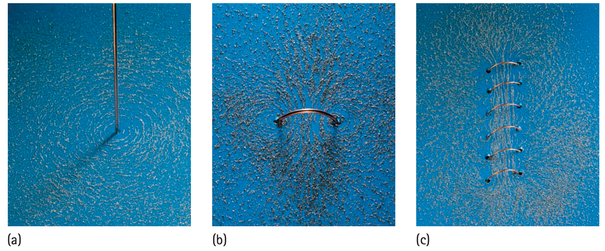

1. Which is required for a wire to produce the current-related magnetic field discussed here: moving charge or stationary charge?
2. What geometric pattern is commonly used to represent the field around a straight current-carrying wire?
3. What instrument from Section 8.1 can be used as a local detector of a current-produced magnetic field?
4. Compare a single loop with many neighboring loops in a coil: what happens to their magnetic effects?
5. What evidence from a current-carrying wire supports the idea of electromagnetism?
6. Use the source image comparing wire-loop/coil patterns. Describe how combining many current loops changes the large-scale field compared with one loop.

7. A wire passes vertically through a tabletop and carries steady current. Describe how you would place several small compasses to collect evidence for the field pattern around it.
8. Two identical coils carry current in opposite directions. Explain why their external field orientations would be opposite even though the coil shapes match.
9. A student increases current through a fixed coil. Predict the qualitative change in the magnetic effect and identify what physical quantity changed.
10. Explain how Oersted-style compass evidence links a circuit phenomenon to a magnetic-field model without requiring the wire to touch the compass.
11. A team wants to prove current direction affects magnetic-field direction. Design the logic of a comparison using the same wire and compass positions but opposite current directions.
12. A student says electromagnetism means “electricity and magnetism are identical.” Critique the wording and replace it with a more accurate relationship supported by the section evidence.
13. Which condition is necessary for the magnetic field discussed around a circuit wire?
14. Field lines around a straight current-carrying wire are typically drawn
15. A compass placed near a current-carrying wire changes direction. This is evidence of
16. Which arrangement most directly concentrates the magnetic effects of several current loops?
17. What happens qualitatively if current through a fixed coil is increased?
18. Why is a wire-loop field different in shape from a straight-wire field?
19. A model shows field arrows parallel to a straight current-carrying wire. Which evidence would most directly challenge it?
20. Which statement about electricity and magnetism is best supported by this section?